= n ∈ ℕ dove n è il n° di elementi in A.
= n ∈ ℕ dove n è il n° di elementi in A.
Appunti di Algebra e Geometria
Ettore Forigo
= n ∈ ℕ dove n è il n° di elementi in A.
Insieme con molteplicità, ovvero una collezione non ordinata di elementi con
ripetizioni.
[a,b,c]
ℕ = Numeri Naturali = 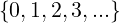
ℤ = Numeri Interi
ℚ = Numeri Razionali
ℝ = Numeri Reali
ℂ = Numeri Complessi  ℝ × ℝ = ℝ2
ℝ × ℝ = ℝ2
ℕ0 = ℕ \
ℚx = ℚ* = ℚ \
ℝx = ℝ* = ℝ \
ℂx = ℂ* = ℂ \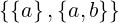
Una sequenza (o ennupla / n-upla) è una collezione ordinata di elementi.
(a,b,c)
Diciture per numeri di elementi:
2 - Paio (pair), coppia (couple) o tupla (tuple)
3 - Terna (triplet) o tripla (triple)
4 - Quaterna (quatern) o quadrupla (quadruple)
(a,b) : = 
(a,a) = 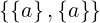 =  = 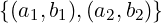
= 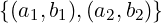
(a,...,y,z) = (a,(...,(y,z)))
Alternativamente:
Sequenza di k elementi di A: Ak = A × (A × (... × A))
k volte
Alternativamente:
In = i ∈ ℕ : 0 < i ≤ n
Sequenza di n elementi di A = a : In → A (funzione di accesso)
Si dice che R ⊆ A×B è una relazione (binaria, anche detta corrispondenza) tra
due insiemi A e B.
Se:
C : = 
Si scrive:
b1 = C(a1)
b2 = C(a2)
O anche:
a1Cb1 a2Cb2
Una relazione R tra A e B si dice ovunque definita (o totale a sinistra, duale
della totalità a destra (suriettività)) se associa ad ogni elemento di A almeno un
elemento di B.
In simboli:
∀x ∈ A.∃y ∈ B : (x,y) ∈ R
Una relazione R tra A e B si dice funzionale (o univalente / unica a destra,
duale dell’iniettività) se ogni elemento di A in R è associato ad un solo elemento
di B.
In simboli:
∀x ∈ A,y,z ∈ B.xRy ∧ xRz  y = z
y = z
Oppure:
∀x ∈ A.(∃y ∈ B : (x,y) ∈ R  ∃!y ∈ B : (x,y) ∈ R)
∃!y ∈ B : (x,y) ∈ R)
Una relazione f si dice funzione se è funzionale e ovunque definita.
“Funzione” si riferisce alla terna: associazione di elementi, dominio e codominio,
non solo all’associazione di elementi. Specificare solo un’associazione non
definisce una funzione: occorre specificare anche dominio e codominio. Infatti,
due funzioni che hanno una “stessa” associazione di elementi ma diverso dominio
e/o diverso codominio sono funzioni diverse.
Si scrive:
f : A → B
dove A è il dominio di f e B è il codominio di f.
Una funzione f si dice iniettiva (injective) (duale della funzionalità) se non
associa a due qualsiasi elementi distinti del dominio lo stesso elemento del
codominio.
In simboli:
∀x,x′∈ dom(f).f(x) = f(x′)  x = x′
x = x′
Una funzione f si dice suriettiva (surjective) (o totale a destra, duale della
totalità a sinistra) se associa un elemento del dominio ad ogni elemento del
codominio.
In simboli:
∀y ∈ codom(f).∃x ∈ dom(f) : y = f(x)
(equivalentemente: im(f) = codom(f))
Una funzione f si dice biiettiva (bijective) (o biiezione, o anche corrispondenza
1 a 1 o biunivoca) se è sia iniettiva che suriettiva, cioè ad ogni elemento del
dominio corrisponde uno ed un solo elemento del codominio.
In simboli:
∀x,x′∈ dom(f).x≠x′ f(x)≠f(x′)
f(x)≠f(x′)
∀y ∈ codom(f).∃x ∈ dom(f) : y = f(x)
Osservazione:
f : A → B è biiettiva 
 = 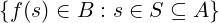
= 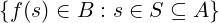
A e B possono essere infiniti.
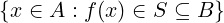 <  ⇐⇒∃ una funzione iniettiva X → Y ∧ ∄ una biiezione X → Y .
⇐⇒∃ una funzione iniettiva X → Y ∧ ∄ una biiezione X → Y .
L’insieme di tutti i valori di f : A → B valutata in ogni elemento di S ⊆ A si dice
l’immagine di S tramite f:
f[S] = f(S) : = 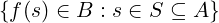⊆ B
Imf = im(f) = f[A]
L’immagine del dominio di una funzione f tramite f si dice immagine di
f.
Il valore di f : A → B valutata in x ∈ A si dice immagine di x tramite f.
im(f) ⊆ codom(f)
L’insieme degli elementi del dominio di una funzione f : A → B che f associa a
tutti gli elementi di S ⊆ B si dice controimmagine, preimmagine o immagine
inversa di S tramite f:
f-1[S] = f-1(S) : = 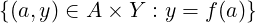⊆ A
Detta anche restrizione del dominio o restrizione a sinistra.
f : A → B,X ⊆ A
Si dice restrizione di f ad X la funzione:
fX : X → B
fX(x) : = f(x) ∀x ∈ X
O equivalentemente:
fX : X → B : = 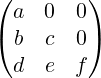
O ancora:
fX : X → B : = f ∘ i
Dove i : X → A è l’inclusione di X in A data da i(a) : = a.
Una notazione equivalente è:
f|X = fX
Detta anche corestrizione, restrizione del codominio o restrizione a destra.
f : A → B, Im(f) ⊆ Y
Si dice troncatura di f ad Y la funzione:
fY : A → Y : = 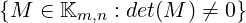
Osservazione:
Il codominio viene ristretto.
Una notazione equivalente è:
f|Y = fY
In generale prima si restringe e poi si tronca una funzione.
f : A → B, g : B → C
L’elemento b che compone in (g ∘ f) è unico ∀a ∈ A.
f : A → B ammette inversa destra g : B → A | (f ∘ g) : B → B, ∀x ∈ B.(f ∘ g)(x) = x ⇐⇒ f è suriettiva.
f : A → B ammette inversa sinistra g : B → A | (g ∘ f) : A → A, ∀x ∈ A.(g ∘ f)(x) = x ⇐⇒ f è iniettiva.
f : A → B ammette inversa destra e sinistra 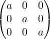 f ammette inversa f-1 che
coincide con l’inversa dentra e sinistra.
f ammette inversa ⇐⇒ f è biettiva.
Una funzione f si dice successione se:
f : ℕ → A
Si dice operazione binaria (binary operation) una funzione o : A × B → C
Si dice operazione binaria interna (o chiusa) (internal/closed binary operation) su di un insieme U una funzione o : U × U → U
Si dice operazione binaria esterna (external binary operation) una operazione binaria o : B × A → A
Una struttura algebrica (algebraic structure) consiste in un insieme, una
collezione (non vuota) di operazioni su di esso e un insieme finito di
identità o proprietà, dette assiomi, che le operazioni devono soddisfare.
Si rappresenta con una ennupla contenente l’insieme e le operazioni:
(U,o)
Un magma o gruppoide (grupoid) (struttura algebrica) (A,*) è un insieme
dotato di un’operazione binaria interna.
* : A × A → A
(a,b) = a * b
Se (A,*) è un magma, si dice che e ∈ A è un elemento neutro (identity
element) per * se è sia elemento neutro destro che elemento neutro sinistro per *,
ovvero se operando e sia a destra che a sinistra con qualsiasi elemento di A si
ottiene di nuovo il medesimo elemento.
In simboli:
∀a ∈ A.e * a = a * e = a
Se *è una operazione binaria A × B → A, si dice che e ∈ B è un elemento
neutro destro per * se:
∀a ∈ A.a * e = a
Se *è una operazione binaria esterna B × A → A, si dice che e ∈ B è un
elemento neutro sinistro per * se:
∀a ∈ A.e * a = a
Un magma (A,*) è un magma unitario (unital magma) (struttura algebrica) se * ammette elemento neutro.
Se (A,*) è un magma si dice che *è associativa se, quando l’operazione è
usata in notazione infissa, spostando le parentesi (cambiando l’ordine di
svolgimento delle operazioni, n.b. non l’ordine degli operandi) il risultato non
cambia. Questo significa che le parentesi si possono aggiungere, rimuovere o
spostare senza cambiare il significato dell’espressione e senza ambiguità.
In simboli:
∀a,b,c ∈ A.a * (b * c) = (a * b) * c
Un magma (A,*) è detto semigruppo (semigroup) (struttura algebrica) se *è associativa.
Un semigruppo (A,*) è detto monoide (monoid) (struttura algebrica) se * ammette elemento neutro.
Sia (A,*) un magma unitario con elemento neutro e.
Si dice che ∀a ∈ A:
a′è inverso destro di a se ∃x′∈ A : a * a′ = e
a′′è inverso sinistro di a se ∃x′′∈ A : a′′* a = e
a′′′è inverso di a se a′′′è inverso destro di a ∧ a′′′è inverso sinistro
a.
Un monoide (A,*) è detto gruppo (group) (struttura algebrica) se ogni elemento di A ammette inverso (necessariamente unico, destro e sinistro, solitamente indicato con a-1).
Un sottoinsieme di un gruppo è un sottogruppo se è a sua volta un gruppo con
la stessa operazione.
In generale un sottoinsieme di un insieme con una struttura algebrica è sua sottostruttura se anch’esso ha la medesima struttura algebrica.
GLn(K) : = , chiamato gruppo lineare generale (general
linear group) (o gruppo di matrici), è un gruppo rispetto al prodotto di matrici
(righe per colonne).
Esiste anche un suo sottogruppo, SLn(K), detto gruppo lineare speciale (special linear group), formato dalle matrici con determinante uguale a 1.
La sottrazione è definita come somma con l’opposto di un elemento in (ℤ,+).
a - b : = a + (-b)
S(Ω) = 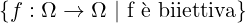è chiamato gruppo simmetrico (symmetric
group) (struttura algebrica) dell’insieme Ω.
È un gruppo rispetto alla composizione di funzioni.
Contiene tutte le possibili permutazioni degli elementi di Ω.
Tutti i gruppi simmetrici di insiemi aventi la stessa cardinalità sono isomorfi
(isomorphic).
L’elemento neutro è la funzione id (id(x) : = x).
Se Ω è finito, il suo gruppo simmetrico si denota con Sn.
In genere in questi casi si preferisce considerare il gruppo delle permutazioni degli
interi 1...n dato che è isomorfo.
Se (A,*) è un magma si dice che *è commutativa se scambiando l’ordine degli
operandi il risultato non cambia.
In simboli:
∀a,b ∈ A.a * b = b * a.
Un gruppo (A,*) è detto abeliano (abelian) (struttura algebrica) o commutativo se *è commutativa.
Se (A,*) e (A,+) sono magmi, si dice che *è distributiva rispetto a + se è
distributiva a destra e a sinistra rispetto a +.
Se *è commutativa, distributività, distributività a destra e distributività a sinistra sono equivalenti.
Una operazione binaria esterna * : A × B → B si dice distributiva a
destra rispetto all’operazione + : B × B → B di un magma (A,+) se:
∀a ∈ A,b,c ∈ B.a * (b + c) = (a * b) + (a * c)
Una operazione binaria * : A × C → A si dice distributiva a sinistra rispetto
all’operazione + : A × A → A di un magma (A, +) se:
∀a,b ∈ A,c ∈ C.(a + b) * c = (a * c) + (b * c)
Un insieme A dotato di due operazioni binarie interne  e 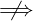è un anello
(rng/non-unital ring) (struttura algebrica) (A,
e 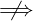è un anello
(rng/non-unital ring) (struttura algebrica) (A, ,
, ) se:
) se:
(A, ) è un gruppo abelliano.
) è un gruppo abelliano.
(A,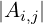 ) è un semigruppo.
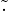è distributiva rispetto a 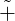.
Un anello (A, ,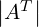 ) è un anello unitario (ring) (o con unità) (struttura
algebrica) se (A,
,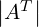 ) è un anello unitario (ring) (o con unità) (struttura
algebrica) se (A, ) è anche un monoide (
) è anche un monoide ( ammette elemento neutro).
ammette elemento neutro).
Se  è commutativa l’anello si dice commutativo (commutative) (struttura
algebrica).
è commutativa l’anello si dice commutativo (commutative) (struttura
algebrica).
Se (A,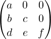, ) è un anello e (A*,
) è un anello e (A*, ) è un gruppo, dove A*: = A\
) è un gruppo, dove A*: = A\ e 0 è l’elemento
neutro di
e 0 è l’elemento
neutro di  , allora (A,
, allora (A, ,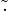 ) è anche un corpo (division ring) (struttura
algebrica).
,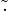 ) è anche un corpo (division ring) (struttura
algebrica).
Un campo (field) (o corpo commutativo) (K,+,⋅) è un anello unitario
commutativo, con 0 elemento neutro di + e 1 elemento neutro di ⋅, in
cui 0≠1 e (K*,⋅) è un gruppo abelliano, dove K* : = K \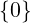 (aggiunge
il requisito di invertibilità di ogni elemento ≠0 per la moltiplicazione).
Alternativamente:
(K,+) è un gruppo abelliano con elemento neutro 0
K*: = K \
(K*,⋅) è un gruppo abelliano con elemento neutro 1
⋅è distributiva rispetto a +.
(F,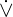,∧), F : =  ,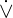: = XOR, ∧: = AND
,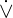: = XOR, ∧: = AND
(ℚ,+,⋅)
(ℝ,+,⋅)
(ℂ,+,⋅)
(V,⊕,*) è detto spazio vettoriale (vector space) (struttura algebrica) su di un
campo (K,+,⋅) se:
(V,⊕) è un gruppo abelliano (⊕è detta somma (di vettori) o legge di
composizione interna)
V è dotato di una operazione binaria esterna * : K ×V → V (detta prodotto per
scalare (gli elementi di K sono detti scalari) o legge di composizione esterna)
*è pseudo-associativa (o compatibile con la moltiplicazione nel campo):
∀a,b ∈ K,v ∈ V.(a ⋅ b) *v = a * (b *v )
* ammette elemento neutro sinistro ∈ K (unitarietà)
*è distributiva a destra rispetto a ⊕
*è pseudo-distributiva a sinistra rispetto a + (o compatibile con l’addizione nel
campo, insieme alla precedente pseudo-distributività):
∀a,b ∈ K,v ∈ V.(a + b) *v = (a *v ) ⊕ (b *v )
Curiosità:
Le ultime quattro proprietà (assiomi) dicono che il prodotto per scalare definisce
un omomorfismo (trasformazione che preserva la struttura algebrica)
(homomorphism, structure preserving map) tra l’anello del campo K ((K,+,⋅)) e
l’anello degli endomorfismi (endomorphism ring) (morfismi da un oggetto a se
stesso) del gruppo (V,⊕).
Notazione:
V (K)
L’elemento neutro della somma di vettori, il vettore nullo, è scritto 0.
Un campo K è spazio vettoriale su se stesso con:
*: = ⋅
⊕: = +
Kn è dotato di struttura di spazio vettoriale su K rispetto a ⊕ e * definiti
componente per componente. (Kn,⊕) è gruppo abelliano.
Tutti gli spazi vettoriali di dimensione uguale sono isomorfi.
Gli elementi di V sono vettori geometrici, cioè freccie orientate.
La somma di vettori è definita con la regola del parallelogramma.
Ogni vettore ammette inverso.
Il prodotto per scalare è un vettore con la stessa direzione di quello originale
ma con lunghezza moltiplicata per lo scalare e verso in base al segno.
V (K) spazio vettoriale, v 1...v n ∈ V
Si dice cominazione lineare dei vettori v 1...v n (necessariamente in numero finito)
mediante gli scalari α1...αn il vettore:
v = α1v 1 + α2v 2 + ... + αnv n = ∑ in∈ℕαiv i
S ⊆ V è sottospazio vettoriale (linear subspace) (struttura algebrica) di V (K) se:
S è dotato dell’operazione binaria interna di somma di (V,+) ristretta ad S ×S e
troncata ad S (Im(+S×S) ⊆ S)
S è dotato dell’operazione binaria interna di prodotto per scalare di V (K)
ristretta a K × S e troncata ad S (Im(*K×S) ⊆ S)
(S,+|S×SS,*|K×SS) è uno spazio vettoriale su K
Se S ⊆ V gli assiomi degli spazi vettoriali sono già verificati (devono valere per
tutti gli elementi in V).
Dunque ciò a cui va fatta attenzione sono la presenza del vettore nullo (0) in S e
le proprietà di chiusura della somma di vettori e del prodotto per scalare.
Notazione:
S ≤ V (K) si legge come S è sottospazio vettoriale di V (K)
Se V (K) è spazio vettoriale con operazioni + e *, per determinare se S ⊆ V è
sottospazio vettoriale di V si può usare il seguente albero decisionale:
Le operazioni + e * di S sono diverse da quelle di V ? → Non è sottospazio
0 (vettore nullo) ⁄∈ S? → Non è sottospazio
¬(∀α ∈ K,v ∈ S.α *v ∈ S) → Non è sottospazio
¬(∀u ,v ∈ S.u + v ∈ S) → Non è sottospazio
È sottospazio
S è sottospazio vettoriale di V (K) ⇐⇒ S è chiuso rispetto alle combinazioni
lineari
Ovvero:
∀α,β ∈ K,v ,w ∈ S.αv + βw ∈ S
Se V (K) è uno spazio vettoriale, e X ⊆ V (K) un insieme/sequenza/sistema di
vettori di V (K), si dice che V (K) è generato da X se ogni vettore di V (K) si
può scrivere come combinazione lineare di un numero finito di elementi di X. X
si dice insieme di generatori per V (K).
Alternativamente:
X è insieme di generatori per V (K) ⇐⇒ (X) = V .
(X) = V .
Uno spazio vettoriale è insieme di generatori per se stesso.
Aggiungere vettori ad un insieme di generatori fornisce ancora un insieme di
generatori.
V (K) è detto finitamente generato se ∃X ⊆ V (K) con  < ∞ e X insieme di
generatori per V (K).
< ∞ e X insieme di
generatori per V (K).
Siano V (K) uno spazio vettoriale e X ⊆ V (K).
(X), detta copertura lineare (linear span) (o chiusura lineare) di X, è
l’insieme di tutte le combinazioni lineari dei vettori in X.
In simboli:
V (K)(X) = (X) =  : = 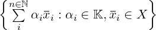
: = 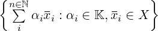
(∅) : = 
(X) è sempre un sottospazio vettoriale di V (K).
Inoltre, è il più piccolo sottospazio vettoriale di V (K) che contiene X.
A ⊆ B 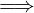(A) ⊆(B)
A = (A) ⇐⇒ A è sottospazio vettoriale. ((A)) = (A)
Siano V (K) uno spazio vettoriale ed S = (v 1,...,v n) una sequenza di suoi vettori.
S è detta libera se l’unica combinazione lineare dei suoi elementi che da 0 è
quella a coefficienti tutti nulli.
S è detta legata se esiste almeno una combinazione lineare dei suoi elementi a
coefficienti non tutti nulli che da 0.
S è legata = S non è libera.
0 ∈ S  S è legata.
S è legata.
v1 ∈ S ∧∃α≠0 : v 2 = αv 1 ∈ S  S è legata (quindi anche se ci sono due vettori
uguali, con α = 1).
S è legata (quindi anche se ci sono due vettori
uguali, con α = 1).
X è libera ∧ Y ⊆ X  Y è libera.
Y è libera.
X è legata ∧ X ⊆ Y  Y è legata.
Y è legata.
S è legata ⇐⇒ almeno uno dei suoi vettori si può scrivere come combinazione lineare dei rimanenti.
Matrice m × n (righe × colonne) a coefficienti in K:
Matm,n(K) = Km,n = Km,n
Elementi ai,j
m≠n → matrice rettangolare
m = n → matrice quadrata
A ∈ Matm,n(K)
\ = diagonale principale
∕ = diagonale secondaria
ai,j = 0 ∀i > j

ai,j = 0 ∀j > i

ai,j = 0 ∀i > j
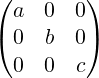
con ai,i = k ∈ K
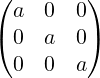
ai,i = 1
In
I3 = 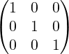
ai,j = 0 ∀i,j
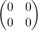
A ∈ Matm,n(K)
Matrice trasposta di A:
AT
Righe e colonne scambiate.
ai,j = aj,i
A = (AT )T
A = AT 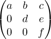 A è simmetrica, A è quadrata
Somma elemento per elemento (per matrici di dimensioni uguali)
(Matm,n(K),+) è un gruppo abeliano.
Distributivo rispetto all’addizione
Non commutativo
Associativo
Distributivo rispetto alla somma
A ⋅ B = 0 A = 0 ∨ B = 0
A = 0 ∨ B = 0
(A ⋅ B)T = BT ⋅ AT
Se:
A ⋅ X = B
dato che la divisione tra matrici non è definita, non si scrive:
X = B∕A
X = 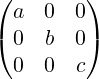
ma:
X = A-1 ⋅ B
Solo per matrici quadrate.

det(A)
Differenza prodotto diagonali
Differenza (somme prodotti diagonali e prodotti sovradiagonali).
Se A è triangolare superiore il determinante è il prodotto della diagonale
A ∈ Matn(K), n ≥ 2
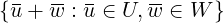 = ∑
j=1n(-1)i+jai,j ⋅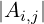
Dove Ai,j è la matrice ottenuta da A togliendo ad A la i-esima riga e la j-esima
colonna.
Il valore (-1)i+j è detto complemento algebrico di ai,j.
è detto complemento algebrico di ai,j.
Osservazione:
Il termine (-1)i+j indica che se la somma degli indici di riga e colonna è dispari,
il segno nella somma va cambiato, altrimenti va mantenuto.
Osservazione:
Si può applicare Laplace per righe / colonne qualsiasi, ma per snellire i conti
conviene scegliere righe / colonne con il maggior n° di 0.
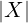 = 1
 = ∏
i=1nai,i
= ∏
i=1nai,i
Quando A è triangolare / diagonale (anche rispetto alla diagonale secondaria,
anche se in quel caso non si chiama triangolare / diagonale)
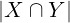 = 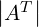
 =
=  ⋅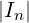
⋅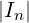
Osservazione:
In generale non vale per la somma.
Se in A c’è una riga / colonna nulla, allora  = 0
= 0
Scambiando righe e colonne il determinante cambia di segno.
Se una riga / colonna è combinazione lineare di altre righe / colonne, allora 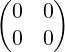 = 0 e viceversa.
Quando una riga / colonna si può scrivere utilizzando le altre righe / colonne
combinate solo con operazioni di somma / prodotto e/o prodotto per scalare.
Osservazione:
Se una riga / colonna è multipla di un’altra riga / colonna allora è una sua
combinazione lineare.
Sommando a una riga / colonna una combinazione lineare delle altre righe /
colonne il determinante non cambia.
Una matrice quadrata si dice non singolare se il suo deteminante è ≠0. Altrimenti si dice singolare.
Si dice inversa di A, se ∃, la matrice A-1 tale che:
A ⋅ A-1 = A-1 ⋅ A = In
Osservazione:
Sia A ∈ Matn(K), ∃A-1 ⇐⇒ ≠0
≠0
Cioè A ammette inversa se e solo se A è non singolare.
Data A = (ai,j) ∈ Matn(K) si dice aggiunta di A la matrice Aa ∈ Matn(K)
ottenuta sostituendo in A ogni elemento col suo complemento algebrico (c).
ci,j = (-1)i+j
 ≠0
≠0  A-1 = 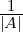⋅ AaT
A-1 = 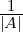⋅ AaT
Data una matrice A ∈ Matm,n(K) si dice minore di ordine p una matrice quadrata di ordine p ottenuta da A sopprimendo n - p colonne e m - p righe.
Data una matrice A ∈ Matm,n(K) dire che il rango di A è p:
rg(A) = p
r(A) = p
ρ(A) = p
con p ≤ min(m,n)
significa dire che A ha un minore non singolare di ordine p, e che ogni eventuale minore di ordine p + 1 è singolare.
r(A) = 0 ⇐⇒ A = 0
Se A ∈ Matn(K) allora r(A) = n ⇐⇒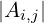≠0
A ha rango massimo = A ∈ Matn(K), r(A) = n
1 ≤ rg(A) ≤ min(m,n), A ∈ Matm,n(K), A≠0
A ∈ Matm,n(K).
Il rango di A è p ⇐⇒∃ in A un minore di ordine p (Mp) non singolare ∧ ogni
minore di ordine p + 1 che contiene completamente Mp è singolare.
Che ha al suo interno.